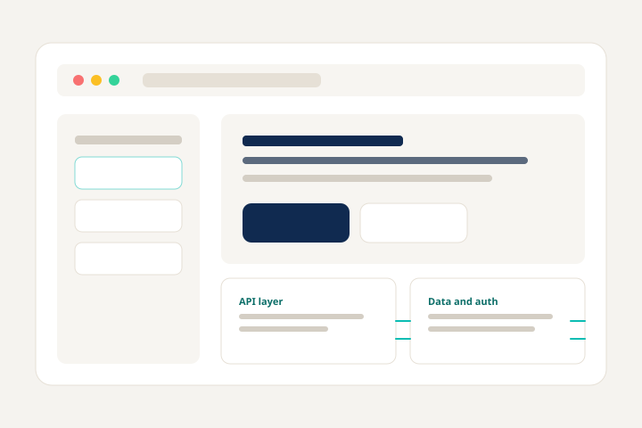
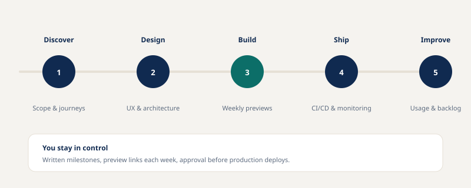

Customer & partner portals
Self-service signup, billing visibility, document upload, and status tracking tied to your CRM or ERP.
Web Applications
Your product in the browser—beautiful UI, SEO-ready pages, and architecture that scales when traffic spikes. No app-store gatekeepers.
We build customer portals, internal tools, and SaaS-style products end to end: UX you are proud to demo, APIs your team can extend, and deploys you control. You get weekly preview links and code in your repo—not slide decks.

Engagements range from greenfield products to modernizing legacy web UIs—always with clear acceptance criteria.
Self-service signup, billing visibility, document upload, and status tracking tied to your CRM or ERP.
Role-based workflows for finance, support, logistics, and compliance—replacing spreadsheets and manual handoffs.
Multi-tenant patterns, usage dashboards, and configuration UIs your CS and implementation teams rely on.
Copilots, smart search, and agent-assisted flows embedded in the product—not bolted on as a separate chat widget.
Buyers judge you in seconds. We design for trust, engineer for speed, and ship with SEO and security baked in—not bolted on at the end.
Clear hierarchy, mobile-first layouts, and flows that guide users to signup, checkout, or “done”—without confusion.
Caching, lean APIs, and smart data loading so pages stay snappy as users and features grow.
Semantic HTML, meta and Open Graph, sitemaps, Core Web Vitals targets, and SSR where Google needs to see content.
CI/CD, staging links, and releases you approve—push improvements weekly, not once a quarter.
Payments, CRM, auth, email, and webhooks wired cleanly so ops is not copying data by hand.
Your repo, your cloud accounts, your IP—no lock-in, full handover when you are ready to run solo.
Delivery
We use the same rhythm as our homepage: short intro call, one-page written scope, then build in weekly cycles with working preview links.

Five phases. Real tools. Outcomes your stakeholders care about—design quality, speed, SEO, and reliable launches.
We map users, competitors, and revenue paths—plus performance and SEO baselines so nothing important is an afterthought.
Design systems, responsive breakpoints, and conversion-focused screens—accessible, on-brand, and ready for dev handoff.
Modern frontend + APIs in vertical slices—working preview links with auth, integrations, and production-grade patterns.
Automated tests, containers, and pipelines to your cloud—monitoring on so you know issues before customers do.
Search tuning, speed wins, and analytics loops—iterate on what moves signups, retention, and support volume.
Share your timeline and constraints—we will reply within one business day with an honest view on scope and next steps.
User stories, wireframes, and technical spikes. We align scope with budget and timeline before code lands in your repo.
React or Next.js SPAs and SSR where SEO and time-to-first-byte matter. Component libraries, forms, and accessible patterns (WCAG-aware).
REST or GraphQL services in Node/NestJS, Python/FastAPI, or .NET when your stack requires it. Migrations, background jobs, and webhooks.
Stripe, Auth0/OIDC, Salesforce, HubSpot, Twilio, and custom ERP connectors—with idempotency and retry policies.
Automated tests, staging parity, load checks on critical paths, and zero-downtime deploy patterns where the platform allows.
Dependency updates, incident response playbooks, and feature work on retainer or milestone basis—you own the code either way.
We match the stack to your team and constraints—not the other way around.
| Layer | Typical choices |
|---|---|
| Frontend | React, Next.js, TypeScript, Tailwind or your design system |
| Backend | Node.js, NestJS, Python, FastAPI, ASP.NET Core |
| Data | PostgreSQL, Redis, object storage, event queues |
| Auth | OIDC / SAML SSO, RBAC, row-level rules where required |
| Hosting | AWS, Azure, GCP, or Vercel for edge-friendly frontends |
| Delivery | GitHub Actions, Terraform or Pulumi, structured logging and metrics |
Multi-tenant lead automation platform—capture from web and social, AI qualification with hot/warm/cold scoring, staff alerts, timed email follow-ups with optional approval, and a Next.js CRM. FastAPI owns business rules; n8n orchestrates schedules and channel ingest.
Read case studyA web application for institutions that hold and disburse patient personal funds. Staff search patient accounts, post deposits, withdrawals, adjustments, and holds, review balances and memos, and run the reports used for allowances, discharged balances, and accounting reconciliation.
Read case studyLarge-scale end-to-end automation for a complex enterprise web app—hundreds of Gherkin scenarios linked to test plans, Playwright execution, split scenario/framework repos, merge-smart CI gates, and agent-ready skills for triage and review.
Read case studycontact@vyrenlo.com · info@vyrenlo.com · Response within one business day